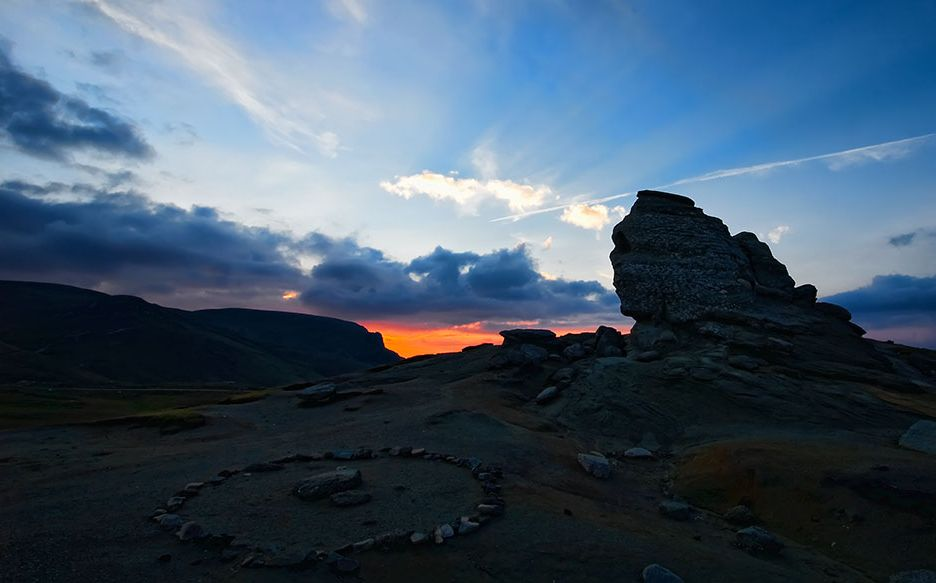

Munţi
Munţii Bucegi

Munţii Bucegi înseamnă aproape 300 km² de munte, situaţi între Valea Prahovei şi Valea Ialomiţei. Întins pe teritoriul a trei judeţe, lanţul muntos urcă până la 2505 m în cel mai înalt punct al său: Vârful Omu. Staţiunile montane numeroase deschid drumul turiştilor în Munţii Bucegi atât pe timp de iarnă, cât şi pe timp de vară.
 Obiective turistice:Sfinxul şi Babele,
Crucea Eroilor Neamului, Cascada Urlătoarea, Peştera Ialomiţei.
Obiective turistice:Sfinxul şi Babele,
Crucea Eroilor Neamului, Cascada Urlătoarea, Peştera Ialomiţei.
Muntii Retezat
Munţii Retezat se înalţă între Petroşani şi Haţeg şi se împart în două grupe: Retezatul Mare şi Retezatul Mic, despărţite de Lacul Bucura. Cel mai înalt vârf de aici este Peleaga, ce ajunge până la 2509 m înălţime. Numeroasele trasee turistice disponibile aici dezvăluie turiştilor peisaje deosebite la înălţimi ameţitoare.
Obiective turistice:Lacul Bucura,
Rezervaţia de Zimbri de la Silvuţ-Haţeg, Biserica Densuş, Ulpia Traiana Sarmizegetusa.
Munţii Făgăraş
Munţii Făgăraş includ cel mai înalt vârf din România: Vârful Moldoveanu, 2544 m. Toată lumea ştie acest lucru încă de pe băncile şcolii. Ce află turiştii care vin în această regiune în plus este că lanţul montan ascunde o mulţime de obiective turistice impresionante, drumuri prin nori şi peisaje naturale incredibile.
Obiective turistice:Lacul Bâlea, Lacul Capra, Transfăgărăşan,
Cetatea Poenari.